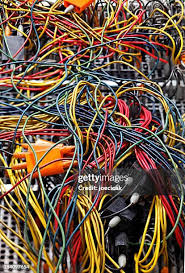
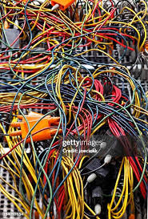

Coding is the composition of a sequence of instructions, called programs , that computers can follow to perform tasks. It involves designing and implementing algorithms, step-by-step specifications of procedures, by writing code in one or more programming languages. Programmers typically use high-level programming languages that are more easily intelligible to humans than machine code, which is directly executed by the central processing unit. Proficient programming usually requires expertise in several different subjects, including knowledge of application domain areas, details of programming languages and generic code libraries, specialized algorithms, and formal logic. Auxiliary tasks are frequently related to programming, such as analyzing requirements, testing, debugging (investigating and fixing problems), implementation of build systems, and management of derived artifacts such as program machine code. While these are sometimes considered part of programming, often the term software development is used for this larger overall process—with the terms programming, implementation, and coding reserved for the writing and editing of code per se. Sometimes software development is known as software engineering, especially when it employs formal methods or follows an engineering design process.
 

The first computer program is generally dated to 1843 when mathematician Ada Lovelace published an algorithm to calculate a sequence of Bernoulli numbers, intended to be carried out by Charles Babbage's Analytical Engine. However, Charles Babbage himself had written a program for the AE in 1837.
Computer programming or coding is the composition of sequences of instructions, called programs, that computers can follow to perform tasks. It involves designing and implementing algorithms, step-by-step specifications of procedures, by writing code in one or more programming languages.
Top